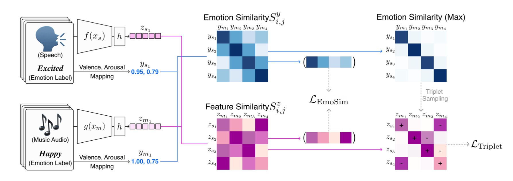
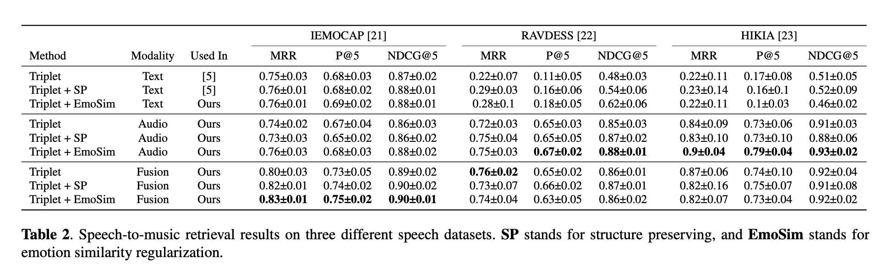

Textless Speech-to-Music Retrieval Using Emotion Similarity
Textless Speech-to-Music Retrieval Using Emotion Similarity, ICASSP 2023 (submitted) - SeungHeon Doh, Minz Won, Keunwoo Choi, Juhan Nam
This project maps speech and music to the joint embedding space and supports music item search for speech query by calculating the similarity between them. The detail of the methodology for building the dataset please refer to our paper.
- Paper on Arxiv (will be updated)
- Implementation Code
- Pre-trained model on Zenodo
Abstract
We introduce a framework that recommends music based on the emotions of speech. In content creation and daily life, speech contains information about human emotions, which can be enhanced by music. In our framework, we focus on a cross-domain retrieval to bridge the gap between speech and music via emotion labels. We explore different speech representations and report their impact on different speech types including acted speech, lexically-matched speech, and wake-up word speech. We also propose an emotion similarity regularization term in cross-domain retrieval tasks. By incorporating the regularization term into training, similar speech-and-music pairs in the emotion space are closer in the joint embedding space. Our comprehensive experimental results show that the propose model is effective in textless speech-to-music retrieval.
Emotion Similarity Regularization
To preserve the continuous emotion distribution in joint embedding embedding space, we propose emotion similarity regularization (EmoSim), modified version of RankSim, for cross-domain retrieval task. An overview of our approach is shown in figure. In practice, our goal is to encourage alignment between the similarity of neighbors in emotion space and the similarity of neighbors in feature space.
import torch
import torch.nn.functional as F
# code reference: https://github.com/BorealisAI/ranksim-imbalanced-regression
def batchwise_emotion_regularizer(S_z, S_y):
"""
S_z: feature similarity between speech and music
S_y: emotion similarity between speech and music
"""
unique_batch = torch.unique(S_y, dim=1)
unique_pred = []
for pred, target, unique_item in zip(S_z, S_y, unique_batch):
indices = torch.stack([random.choice((target==i).nonzero()[0]) for i in unique_item])
unique_pred.append(pred[indices])
emotion_feature = torch.stack(unique_pred)
emo_loss = F.mse_loss(emotion_feature, unique_batch)
return emo_loss
In the wild demo
To demonstrate real industrial scenarios, we use samples from audio books contents (youtube). It also searches for music using only the audio modality because it assumes no transcription. It also makes use of the soundtrack360 dataset as a high-quality audio database.
Test-set demo
We report the results for IEMOCAP and Audioset, which are test datsets reported in the paper.
| Speech Query | Similar Music 1 | Similar Music 2 | Similar Music 3 | |
|---|---|---|---|---|
| angry | ||||
| happy | ||||
| sad | ||||
| neutral |
Results
Table compares the different retrieval models with text, audio, fusion speech modality. Each cross-modal retrieval model was trained 5 times with a different random seed, and average score and standard deviation are reported together. In the case of the fusion method, we utilize inter-modality dynamics through late fusion. When comparing modalities, audio shows high performance regardless of the speech dataset. In IEMOCAP with linguistic information, text modality outperforms speech modality. A possible reason might be the availability of high emotional clues in the linguistic structure. The fusion model shows a clear performance improvement over other uni-modalities. It is expected that acoustic information and linguistic information have different information.
When comparing each method, our proposed emotion similarity (EmoSim) regularization method shows high performance and low standard deviation in all three datasets and various modalities. In particular, in the audio modality of the three datasets, Triplet + EmoSim method shows high NDCG@5 performance. This is because, in the failure case, the model retrieves music items as close as possible to the correct answers.
Visualization

Metric learning embedding spaces are projected to a 2D space using uniform manifold approximation and projection (UMAP). We fit UMAP with music and speech embeddings, then projected them into the 2D space. Figure is the visualization of the multi-modal embedding space. Due to space constraints, we only visualize the four models. All embedding vectors are computed from the test set and the star marker stands for speech embedding and the circle marker stands for music embedding. First, we confirmed that all models successfully discriminate emotion semantics. In the case of the triplet model, scary music embeddings are located at between sad and happy speech embedding cluster. This problem is alleviated in Triplet + EmoSim model. There are relatively few scary music samples closer to angry and frustration clusters. We believe that joint embedding space learned inter-modality neighborhood structure from the continuous emotion similarity.
Conclusion
We presented a speech-to-music cross-domain retrieval framework that finds music that matches the emotion of speech. We explored various speech modality representations and proposed efficient masking fusion methods. To evaluate joint embedding space, we proposed a new evaluation metric that considers the rank order of a continuous distribution using the valence-arousal space of emotion. Experiments show that our model successfully bridges the modality gap. Especially, our proposed masking fusion methods make a more generalized joint embedding space. In the future, our approach can be extended to include other modalities (e.g., vision) and improved with better hierarchical fusion methods.